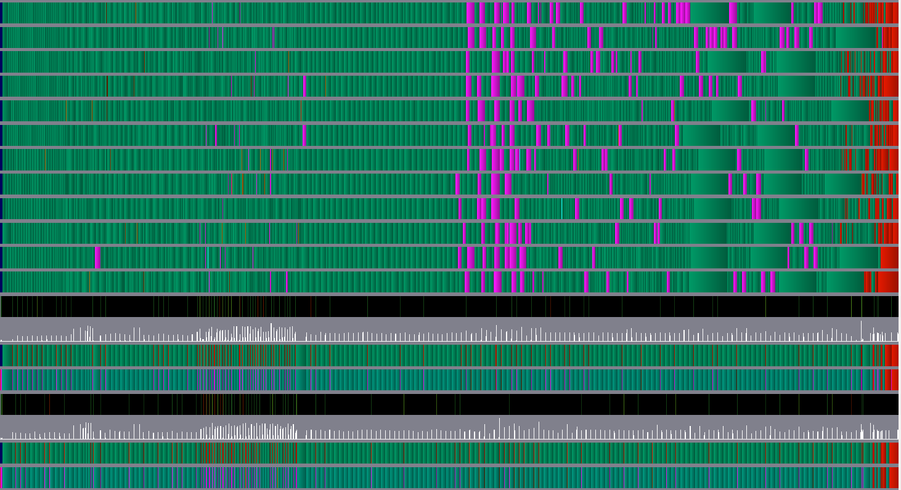
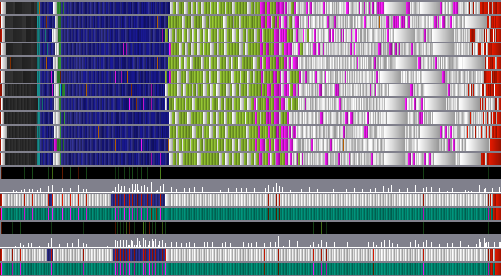
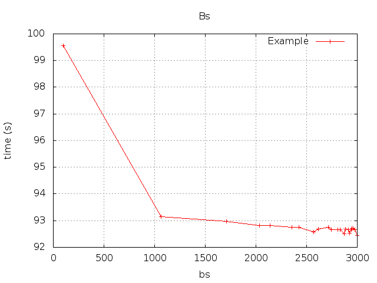
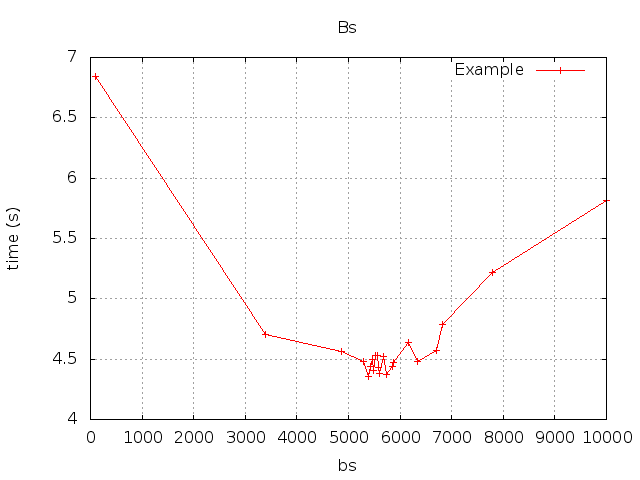
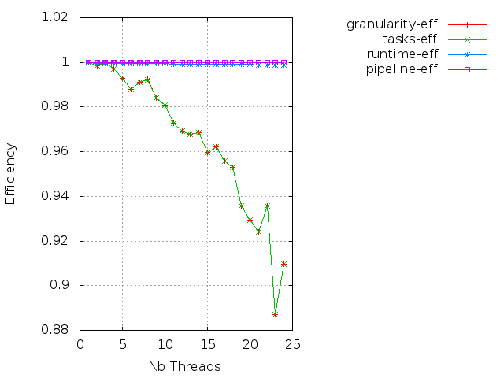
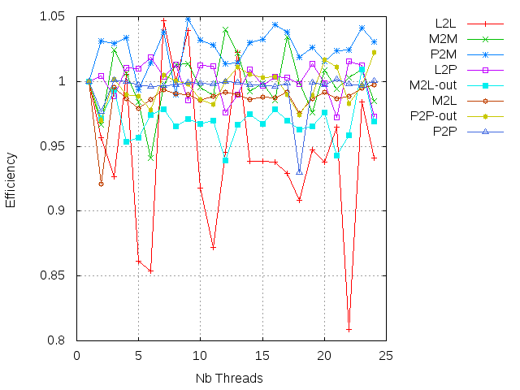
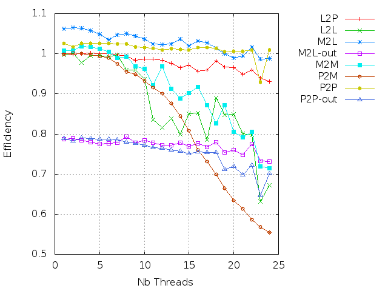

In this tutorial, we provide the commands to install ScalFMM and the needed tools in order to compute parallel efficiencies.
We first show how to obtain the homogeneous efficencies and then the heterogeneous ones (not done yet).
For some installation steps, we provide a “valid-if” test which shows if the previous command has been done correctly or not.
In case of success
STEP-OK
will be print-out.
In addition, if a library is already installed on the system, it is possible to set the output variables directly and test with the “valid-if” command if it will work.
It is possible to follow these steps only to compile ScalFMM above StarPU and so we marked the installation of execution-trace tools as
Optional
.
However, we higly recommended to install them and to follow all the steps since they let have the efficiencies.
But if one wants to execute without any overhead, it might need to remove the usage of FXT.
In order to follow this tutorial, it is needed to have the following applications installed:
MKLROOT
)
CUDA_PATH
must be set. In our case,
CUDA_PATH=/usr/local/cuda-7.5/
sudo apt-get install vite
or see
http://vite.gforge.inria.fr/download.php
)
[Remark] Some installations of CUDA does not have libcuda file.
In this case, one needs to create a link :sudo ln /usr/local/cuda-7.5/lib64/libcudart.so /usr/local/cuda-7.5/lib64/libcuda.so[Plafrim-Developers]
For those who use this tutorial on Plafrim (or a similar cluster), we provide extra informations.
To allocate an heterogeneous node :
salloc -N 1 --time=03:00:00 --exclusive -p court_sirocco -CHaswell --gres=gpu:4 -x sirocco06Then, find it using
squeueand access it byssh.We have run this tutorial with the modules :
module load compiler/gcc/4.9.2 cuda75/toolkit/7.5.18 intel/mkl/64/11.2/2016.0.0 build/cmake/3.2.1
The variable
SCALFMM_TEST_DIR
is used to specify the working directory where all the tools are going to be installed:
export SCALFMM_TEST_DIR=~/scalfmm_test
cd $SCALFMM_TEST_DIR
In order to be able to stop the tutorial in the middle and restart later, we will register the variables in a file that should be source to restart later:
# function scalfmmRegisterVariable() { echo "export $1=${!1}" >> "$SCALFMM_TEST_DIR/environment.source"; }
echo "function scalfmmRegisterVariable() { echo \"export \$1=\${!1}\" >> \"$SCALFMM_TEST_DIR/environment.source\"; }" > "$SCALFMM_TEST_DIR/environment.source"
source "$SCALFMM_TEST_DIR/environment.source"
Output variables:
scalfmmRegisterVariable SCALFMM_TEST_DIR
Valid-if
if [[ -n $SCALFMM_TEST_DIR ]] && [[ -d $SCALFMM_TEST_DIR ]] ; then
echo “STEP-OK”
fi
To restart the tutorial, one needs to re-define the working directory and to source the save file before to resume:
export SCALFMM_TEST_DIR=~/scalfmm_test
if [[ ! -d $SCALFMM_TEST_DIR ]] ; then
mkdir $SCALFMM_TEST_DIR
fi
cd $SCALFMM_TEST_DIR
source "$SCALFMM_TEST_DIR/environment.source"
If the computational node does not have access to internet, we provide a command to download the needed packages (otherwise the next commands still include just in time download):
cd $SCALFMM_TEST_DIR
wget https://www.open-mpi.org/software/hwloc/v1.11/downloads/hwloc-1.11.2.tar.gz
wget http://download.savannah.gnu.org/releases/fkt/fxt-0.2.11.tar.gz # Optional
wget http://www.fftw.org/fftw-3.3.4.tar.gz
svn export svn://scm.gforge.inria.fr/svnroot/starpu/trunk starpu
git clone --depth=1 https://scm.gforge.inria.fr/anonscm/git/scalfmm-public/scalfmm-public.git
cd $SCALFMM_TEST_DIR
if [[ ! -f hwloc-1.11.2.tar.gz ]] ; then
wget https://www.open-mpi.org/software/hwloc/v1.11/downloads/hwloc-1.11.2.tar.gz
fi
tar xvf hwloc-1.11.2.tar.gz
cd hwloc-1.11.2/
export SCALFMM_HWLOC_DIR=$SCALFMM_TEST_DIR/hwlocinstall
./configure --prefix=$SCALFMM_HWLOC_DIR
make install
Output variables:
scalfmmRegisterVariable SCALFMM_HWLOC_DIR
Valid-if:
if [[ -n $SCALFMM_HWLOC_DIR ]] && [[ -d $SCALFMM_HWLOC_DIR/lib/ ]] && [[ -f $SCALFMM_HWLOC_DIR/lib/libhwloc.so ]]; then
echo "STEP-OK"
fi
cd $SCALFMM_TEST_DIR
if [[ ! -f fxt-0.2.11.tar.gz ]] ; then
wget http://download.savannah.gnu.org/releases/fkt/fxt-0.2.11.tar.gz
fi
tar xvf fxt-0.2.11.tar.gz
cd fxt-0.2.11/
export SCALFMM_FXT_DIR=$SCALFMM_TEST_DIR/fxtinstall
./configure --prefix=$SCALFMM_FXT_DIR
make install
Output variables:
scalfmmRegisterVariable SCALFMM_FXT_DIR
Valid-if:
if [[ -n $SCALFMM_FXT_DIR ]] && [[ -d $SCALFMM_FXT_DIR/lib/ ]] && [[ -f $SCALFMM_FXT_DIR/lib/libfxt.so ]]; then
echo "STEP-OK"
fi
For those who do not use MKL FFT interface, they have to install FFTW (float/double):
cd $SCALFMM_TEST_DIR
if [[ ! -f fftw-3.3.4.tar.gz ]] ; then
wget http://www.fftw.org/fftw-3.3.4.tar.gz
fi
tar xvf fftw-3.3.4.tar.gz
cd fftw-3.3.4/
export SCALFMM_FFTW_DIR=$SCALFMM_TEST_DIR/fftinstall
./configure --prefix=$SCALFMM_FFTW_DIR
make install
./configure --prefix=$SCALFMM_FFTW_DIR --enable-float
make install
Output variables:
scalfmmRegisterVariable SCALFMM_FFTW_DIR
Valid-if:
if [[ -n $SCALFMM_FFTW_DIR ]] && [[ -d $SCALFMM_FFTW_DIR/lib/ ]] && [[ -f $SCALFMM_FFTW_DIR/lib/libfftw3.a ]] && [[ -f $SCALFMM_FFTW_DIR/lib/libfftw3f.a ]]; then
echo "STEP-OK"
fi
cd $SCALFMM_TEST_DIR
if [[ ! -d starpu ]] ; then
svn export svn://scm.gforge.inria.fr/svnroot/starpu/trunk starpu
fi
cd starpu/
export SCALFMM_STARPU_DIR=$SCALFMM_TEST_DIR/starpuinstall
./autogen.sh
./configure --prefix=$SCALFMM_STARPU_DIR --with-fxt=$SCALFMM_FXT_DIR --with-hwloc=$SCALFMM_HWLOC_DIR --with-cuda-dir=$CUDA_PATH --disable-opencl
make install
Optional In case you do not want to use trace (FXT) please remove the
--with-fxt=$SCALFMM_FXT_DIRparameter from the command
Output variables:
scalfmmRegisterVariable SCALFMM_STARPU_DIR
Valid-if:
if [[ -n $SCALFMM_STARPU_DIR ]] && [[ -d $SCALFMM_STARPU_DIR/lib/ ]] && [[ -f $SCALFMM_STARPU_DIR/lib/libstarpu.so ]] ; then
echo "STEP-OK"
fi
cd $SCALFMM_TEST_DIR
if [[ ! -d scalfmm-public ]] ; then
git clone --depth=1 https://scm.gforge.inria.fr/anonscm/git/scalfmm-public/scalfmm-public.git
fi
cd scalfmm-public/
export SCALFMM_SOURCE_DIR=`pwd`
cd Build/
export SCALFMM_BUILD_DIR=`pwd`
Output variables:
scalfmmRegisterVariable SCALFMM_BUILD_DIR
scalfmmRegisterVariable SCALFMM_SOURCE_DIR
cmake .. -DSCALFMM_BUILD_DEBUG=OFF -DSCALFMM_USE_MPI=OFF -DSCALFMM_BUILD_TESTS=ON -DSCALFMM_BUILD_UTESTS=OFF -DSCALFMM_USE_BLAS=ON -DSCALFMM_USE_MKL_AS_BLAS=OFF -DSCALFMM_USE_LOG=ON -DSCALFMM_USE_STARPU=ON -DSCALFMM_USE_CUDA=ON -DSCALFMM_USE_OPENCL=OFF -DHWLOC_DIR=$SCALFMM_HWLOC_DIR -DSTARPU_DIR=$SCALFMM_STARPU_DIR -DSCALFMM_USE_FFT=ON -DFFT_DIR=$SCALFMM_FFT_DIR
cmake .. -DSCALFMM_BUILD_DEBUG=OFF -DSCALFMM_USE_MPI=OFF -DSCALFMM_BUILD_TESTS=ON -DSCALFMM_BUILD_UTESTS=OFF -DSCALFMM_USE_BLAS=ON -DSCALFMM_USE_MKL_AS_BLAS=ON -DSCALFMM_USE_LOG=ON -DSCALFMM_USE_STARPU=ON -DSCALFMM_USE_CUDA=ON -DSCALFMM_USE_OPENCL=OFF -DHWLOC_DIR=$SCALFMM_HWLOC_DIR -DSTARPU_DIR=$SCALFMM_STARPU_DIR -DSCALFMM_USE_FFT=ON -DFFT_DIR=$SCALFMM_FFT_DIR
[Plafrim-Developers] Should use that one
cmake .. -DSCALFMM_BUILD_DEBUG=OFF -DSCALFMM_USE_MPI=OFF -DSCALFMM_BUILD_TESTS=ON -DSCALFMM_BUILD_UTESTS=OFF -DSCALFMM_USE_BLAS=ON -DSCALFMM_USE_MKL_AS_BLAS=ON -DSCALFMM_USE_LOG=ON -DSCALFMM_USE_STARPU=ON -DSCALFMM_USE_CUDA=ON -DSCALFMM_USE_OPENCL=OFF -DHWLOC_DIR=$SCALFMM_HWLOC_DIR -DSTARPU_DIR=$SCALFMM_STARPU_DIR -DSCALFMM_USE_FFT=ON -DSCALFMM_USE_MKL_AS_FFTW=ON
Valid-if:
cmake .. ; if [[ "$?" == "0" ]] ; then echo "STEP-OK" ; fi
cd $SCALFMM_BUILD_DIR
make testBlockedUnifCudaBench
Valid-if:
ls ./Tests/Release/testBlockedUnifCudaBench ; if [[ "$?" == "0" ]] ; then echo "STEP-OK" ; fi
In this section we compute a simulation and look at the resulting trace.
ScalFMM binary parameters and descriptions:
--help
as parameter provide the possible/valid parameters
-h
: height of the tree
-bs
: granularity/size of the group
-nb
: number of particles generated
STARPU_NCPUS
: the number of CPU workers
STARPU_NCUDA
: the number of GPU workers (for heterogeneous binary)
-validation
-p2p-m2l-cuda-only
: to compute the P2P and the M2L only on GPU (the rest on the CPU)
Examples:
export STARPU_NCPUS=12
export STARPU_NCUDA=2
./Tests/Release/testBlockedUnifCudaBench -nb 30000000 -h 7 -bs 800
Last part of the output should be:
Start FGroupTaskStarPUAlgorithm
directPass in 0.0406482s
inblock in 0.000780428s
outblock in 0.0398674s
bottomPass in 0.00586269s
upwardPass in 0.00265723s
transferPass in 0.00323571s
inblock in 0.000124817s
outblock in 0.00298331s
downardPass in 0.00257975s
transferPass in 0.0652285s
inblock in 0.00164774s
outblock in 0.0635799s
L2P in 0.0115733s
Submitting the tasks took 0.139101s
Moving data to the host took 0.0578765s
@EXEC TIME = 14.6321s
Convert the fxt file
$SCALFMM_STARPU_DIR/bin/starpu_fxt_tool -i "/tmp/prof_file_"$USER"_0"
Then visualize the output with
vite
vite ./paje.trace
Should be like:

We can convert the color of the trace by (requiere Qt5 library):
$SCALFMM_SOURCE_DIR/Addons/BenchEfficiency/pajecolor paje.trace $SCALFMM_SOURCE_DIR/Addons/BenchEfficiency/paintmodel.fmm.colors
vite ./paje.trace.painted
Should be like:

python $SCALFMM_STARPU_DIR/bin/starpu_trace_state_stats.py -t trace.rec
Should give something like:
"Name","Count","Type","Duration"
"Initializing",14,"Runtime",7153.096196
"Overhead",57010,"Runtime",376.473463
"Idle",14355,"Other",12.815899
"Scheduling",28441,"Runtime",238.367394
"Sleeping",610,"Other",13786.513208
"FetchingInput",14341,"Runtime",13918.805814
"execute_on_all_wrapper",30,"Task",21.288802
"Executing",414,"Runtime",26852.864578
"PushingOutput",14341,"Runtime",284.96123
"P2P-out",3846,"Task",60378.266619
"Callback",13559,"Runtime",4.210633
"P2P",328,"Task",15383.426991
"M2L-level-5",41,"Task",2354.702554
"M2L-level-6",328,"Task",18349.915495
"Deinitializing",14,"Runtime",109.87483
"M2L-level-4",6,"Task",275.088295
"P2M",328,"Task",11312.022842
"M2M-level-5",328,"Task",829.9055
"M2M-level-4",41,"Task",93.130498
"M2L-out-level-5",638,"Task",1914.900053
"M2M-level-3",6,"Task",11.053067
"M2M-level-2",1,"Task",1.363157
"M2L-out-level-4",22,"Task",159.580457
"L2L-level-4",41,"Task",84.554065
"L2L-level-5",328,"Task",1087.717767
"M2L-out-level-6",7692,"Task",18322.518045
"L2P",328,"Task",27146.256793
"M2L-level-2",1,"Task",2.661235
"L2L-level-3",6,"Task",11.346978
"M2L-level-3",1,"Task",47.612555
"L2L-level-2",1,"Task",1.471873
Most of the script are in the addon directories
export SCALFMM_AB=$SCALFMM_SOURCE_DIR/Addons/BenchEfficiency/
Output variable:
scalfmmRegisterVariable SCALFMM_AB
Here we compute the efficiencies for a given test case on CPU only.
Go in the build dir and create output dir
cd $SCALFMM_BUILD_DIR
export SCALFMM_RES_DIR=$SCALFMM_BUILD_DIR/homogeneous
mkdir $SCALFMM_RES_DIR
Output variable:
scalfmmRegisterVariable SCALFMM_RES_DIR
Set up the configuration variables:
export SCALFMM_NB=10000000
export SCALFMM_H=7
export SCALFMM_MIN_BS=100
export SCALFMM_MAX_BS=10000
export SCALFMM_MAX_NB_CPU=24
Find best granularity in sequential and in parallel:
export STARPU_NCPUS=1
export STARPU_NCUDA=0
export SCALFMM_BS_CPU_SEQ=`$SCALFMM_AB/scalfmmFindBs.sh "./Tests/Release/testBlockedUnifCudaBench -nb $SCALFMM_NB -h $SCALFMM_H -bs" $SCALFMM_MIN_BS $SCALFMM_MAX_BS | $SCALFMM_AB/scalfmmExtractKey.sh "@BEST BS" `
if [[ `which gnuplot | wc -l` == "1" ]] ; then
gnuplot -e "filename='seq-bs-search'" $SCALFMM_AB/scalfmmFindBs.gplot
fi
export STARPU_NCPUS=$SCALFMM_MAX_NB_CPU
export STARPU_NCUDA=0
export SCALFMM_BS_CPU_PAR=`$SCALFMM_AB/scalfmmFindBs.sh "./Tests/Release/testBlockedUnifCudaBench -nb $SCALFMM_NB -h $SCALFMM_H -bs" $SCALFMM_MIN_BS $SCALFMM_MAX_BS | $SCALFMM_AB/scalfmm_extract_key "@BEST BS" `
if [[ `which gnuplot | wc -l` == "1" ]] ; then
gnuplot -e "filename='par-bs-search'" $SCALFMM_AB/scalfmmFindBs.gplot
fi
In our case we get 9710 and 5385.
Output variable:
scalfmmRegisterVariable SCALFMM_BS_CPU_SEQ
scalfmmRegisterVariable SCALFMM_BS_CPU_PAR
We can look to the work that has been done to find the best granularity:


Then we compute the efficiency using both granulirities and keep the .rec files:
export SCALFMM_MAX_NB_CPU=24
export STARPU_NCUDA=0
source "$SCALFMM_AB/execAllHomogeneous.sh"
We should end with all the .rec files and their corresponding time files and
ls "$SCALFMM_RES_DIR"
should return something like:
trace-nb_10000000-h_7-bs_5385-CPU_1.rec trace-nb_10000000-h_7-bs_9710-CPU_15.rec.time trace-nb_10000000-h_7-bs_9710-CPU_21.rec trace-nb_10000000-h_7-bs_9710-CPU_4.rec.time
trace-nb_10000000-h_7-bs_5385-CPU_1.rec.time trace-nb_10000000-h_7-bs_9710-CPU_16.rec trace-nb_10000000-h_7-bs_9710-CPU_21.rec.time trace-nb_10000000-h_7-bs_9710-CPU_5.rec
trace-nb_10000000-h_7-bs_9710-CPU_10.rec trace-nb_10000000-h_7-bs_9710-CPU_16.rec.time trace-nb_10000000-h_7-bs_9710-CPU_22.rec trace-nb_10000000-h_7-bs_9710-CPU_5.rec.time
trace-nb_10000000-h_7-bs_9710-CPU_10.rec.time trace-nb_10000000-h_7-bs_9710-CPU_17.rec trace-nb_10000000-h_7-bs_9710-CPU_22.rec.time trace-nb_10000000-h_7-bs_9710-CPU_6.rec
trace-nb_10000000-h_7-bs_9710-CPU_11.rec trace-nb_10000000-h_7-bs_9710-CPU_17.rec.time trace-nb_10000000-h_7-bs_9710-CPU_23.rec trace-nb_10000000-h_7-bs_9710-CPU_6.rec.time
trace-nb_10000000-h_7-bs_9710-CPU_11.rec.time trace-nb_10000000-h_7-bs_9710-CPU_18.rec trace-nb_10000000-h_7-bs_9710-CPU_23.rec.time trace-nb_10000000-h_7-bs_9710-CPU_7.rec
trace-nb_10000000-h_7-bs_9710-CPU_12.rec trace-nb_10000000-h_7-bs_9710-CPU_18.rec.time trace-nb_10000000-h_7-bs_9710-CPU_24.rec trace-nb_10000000-h_7-bs_9710-CPU_7.rec.time
trace-nb_10000000-h_7-bs_9710-CPU_12.rec.time trace-nb_10000000-h_7-bs_9710-CPU_19.rec trace-nb_10000000-h_7-bs_9710-CPU_24.rec.time trace-nb_10000000-h_7-bs_9710-CPU_8.rec
trace-nb_10000000-h_7-bs_9710-CPU_13.rec trace-nb_10000000-h_7-bs_9710-CPU_19.rec.time trace-nb_10000000-h_7-bs_9710-CPU_2.rec trace-nb_10000000-h_7-bs_9710-CPU_8.rec.time
trace-nb_10000000-h_7-bs_9710-CPU_13.rec.time trace-nb_10000000-h_7-bs_9710-CPU_1.rec trace-nb_10000000-h_7-bs_9710-CPU_2.rec.time trace-nb_10000000-h_7-bs_9710-CPU_9.rec
trace-nb_10000000-h_7-bs_9710-CPU_14.rec trace-nb_10000000-h_7-bs_9710-CPU_1.rec.time trace-nb_10000000-h_7-bs_9710-CPU_3.rec trace-nb_10000000-h_7-bs_9710-CPU_9.rec.time
trace-nb_10000000-h_7-bs_9710-CPU_14.rec.time trace-nb_10000000-h_7-bs_9710-CPU_20.rec trace-nb_10000000-h_7-bs_9710-CPU_3.rec.time
trace-nb_10000000-h_7-bs_9710-CPU_15.rec trace-nb_10000000-h_7-bs_9710-CPU_20.rec.time trace-nb_10000000-h_7-bs_9710-CPU_4.rec
We now compute the efficiencies from these files
g++ -std=c++11 $SCALFMM_AB/mergetimefile.cpp -o $SCALFMM_AB/mergetimefile.exe
$SCALFMM_AB/mergetimefile.exe "$SCALFMM_RES_DIR/trace-nb_$SCALFMM_NB-h_$SCALFMM_H-bs_$SCALFMM_BS_CPU_SEQ-CPU_1.rec" "$SCALFMM_RES_DIR/trace-nb_$SCALFMM_NB-h_$SCALFMM_H-bs_$SCALFMM_BS_CPU_SEQ-CPU_%d.rec" $SCALFMM_MAX_NB_CPU
We end with efficiency for the application and for the operators.
Create global-eff.data
Create task-eff.data
Create task-gr-eff.dat
We can plot each of them
gnuplot -e "filename='global-eff'" $SCALFMM_AB/scalfmmPlotAll.gplot
gnuplot -e "filename='task-eff'" $SCALFMM_AB/scalfmmPlotAll.gplot
gnuplot -e "filename='task-gr-eff'" $SCALFMM_AB/scalfmmPlotAll.gplot
In our case it gives:



NOT FINISHED!!!!
For test case
-nb 10000000
(10 million) and
-h 6
(height of the tree equal to 6),
we first want to know the best granularity
-bs
.
This parameter will certainly not be the same for sequential/parallel/heterogenous configurations.
export SCALFMM_NB=10000000
export SCALFMM_H=7
export SCALFMM_MIN_BS=100
export SCALFMM_MAX_BS=3000
export SCALFMM_MAX_NB_CPU=24
export SCALFMM_MAX_NB_GPU=4
export STARPU_NCPUS=1
export STARPU_NCUDA=0
export SCALFMM_BS_CPU_SEQ=`$SCALFMM_AB/scalfmmFindBs.sh -nb $SCALFMM_NB -h $SCALFMM_H $SCALFMM_MIN_BS $SCALFMM_MAX_BS | $SCALFMM_AB/scalfmm_extract_key "@BEST BS" `
if [[ `which gnuplot | wc -l` == "1" ]] ; then
gnuplot -e "filename='seq-bs-search'" $SCALFMM_AB/scalfmmFindBs.gplot
fi
export STARPU_NCPUS=$SCALFMM_MAX_NB_CPU
export STARPU_NCUDA=0
export SCALFMM_BS_CPU_PAR=`$SCALFMM_AB/scalfmmFindBs.sh -nb $SCALFMM_NB -h $SCALFMM_H $SCALFMM_MIN_BS $SCALFMM_MAX_BS | $SCALFMM_AB/scalfmm_extract_key "@BEST BS" `
if [[ `which gnuplot | wc -l` == "1" ]] ; then
gnuplot -e "filename='par-bs-search'" $SCALFMM_AB/scalfmmFindBs.gplot
fi
export STARPU_NCPUS=$SCALFMM_MAX_NB_CPU
export STARPU_NCUDA=$SCALFMM_MAX_NB_GPU
export SCALFMM_BS_CPU_GPU=`$SCALFMM_AB/scalfmmFindBs.sh -nb $SCALFMM_NB -h $SCALFMM_H $SCALFMM_MIN_BS $SCALFMM_MAX_BS | $SCALFMM_AB/scalfmm_extract_key "@BEST BS" `
if [[ `which gnuplot | wc -l` == "1" ]] ; then
gnuplot -e "filename='cpugpu-bs-search'" $SCALFMM_AB/scalfmmFindBs.gplot
fi
Then, we can execute three best configurations, and keep .rec for each of them:
export STARPU_NCPUS=1
export STARPU_NCUDA=0
./Tests/Release/testBlockedUnifCudaBench -nb $SCALFMM_NB -h $SCALFMM_H -bs $SCALFMM_CPU_SEQ
export SCALFMM_SEQ_REC="trace-nb_$SCALFMM_NB-h_$SCALFMM_H-bs_$SCALFMM_CPU_SEQ-CPU_$STARPU_NCPUS-GPU_$STARPU_NCUDA.rec"
mv trace.rec $SCALFMM_SEQ_REC
export STARPU_NCPUS=$SCALFMM_MAX_NB_CPU
export STARPU_NCUDA=0
./Tests/Release/testBlockedUnifCudaBench -nb $SCALFMM_NB -h $SCALFMM_H -bs $SCALFMM_BS_CPU_PAR
export SCALFMM_PAR_REC="trace-nb_$SCALFMM_NB-h_$SCALFMM_H-bs_$SCALFMM_CPU_SEQ-CPU_$STARPU_NCPUS-GPU_$STARPU_NCUDA.rec"
mv trace.rec $SCALFMM_PAR_REC
export STARPU_NCPUS=$SCALFMM_MAX_NB_CPU
export STARPU_NCUDA=$SCALFMM_MAX_NB_GPU
./Tests/Release/testBlockedUnifCudaBench -nb $SCALFMM_NB -h $SCALFMM_H -bs $SCALFMM_BS_CPU_GPU
export SCALFMM_PAR_CPU_GPU_REC="trace-nb_$SCALFMM_NB-h_$SCALFMM_H-bs_$SCALFMM_CPU_SEQ-CPU_$STARPU_NCPUS-GPU_$STARPU_NCUDA.rec"
mv trace.rec $SCALFMM_PAR_CPU_GPU_REC
And we also want the GPU tasks only on GPU
export STARPU_NCPUS=$SCALFMM_MAX_NB_CPU
export STARPU_NCUDA=$SCALFMM_MAX_NB_GPU
./Tests/Release/testBlockedUnifCudaBench -nb $SCALFMM_NB -h $SCALFMM_H -bs $SCALFMM_BS_CPU_GPU -p2p-m2l-cuda-only
export SCALFMM_PAR_GPU_REC="trace-nb_$SCALFMM_NB-h_$SCALFMM_H-bs_$SCALFMM_CPU_SEQ-CPU_$STARPU_NCPUS-GPU_$STARPU_NCUDA-GPUONLY.rec"
mv trace.rec $SCALFMM_PAR_GPU_REC
And we want the sequential version with parallel granularity:
export STARPU_NCPUS=1
export STARPU_NCUDA=0
./Tests/Release/testBlockedUnifCudaBench -nb $SCALFMM_NB -h $SCALFMM_H -bs $SCALFMM_BS_CPU_PAR
SCALFMM_SEQ_CPU_BS_REC="trace-nb_$SCALFMM_NB-h_$SCALFMM_H-bs_$SCALFMM_CPU_SEQ-CPU_$STARPU_NCPUS-GPU_$STARPU_NCUDA.rec"
mv trace.rec $SCALFMM_SEQ_CPU_BS_REC
./Tests/Release/testBlockedUnifCudaBench -nb $SCALFMM_NB -h $SCALFMM_H -bs $SCALFMM_BS_CPU_GPU
SCALFMM_SEQ_GPU_BS_REC="trace-nb_$SCALFMM_NB-h_$SCALFMM_H-bs_$SCALFMM_CPU_SEQ-CPU_$STARPU_NCPUS-GPU_$STARPU_NCUDA.rec"
mv trace.rec $SCALFMM_SEQ_GPU_BS_REC
From these files, we are able to get the different efficencies.
From the file:
$SCALFMM_SEQ_REC
: the resulting file from the sequential execution with best sequential granularity
$SCALFMM_PAR_REC
: the resulting file from a parallel execution (no GPU) with best parallel granularity
$SCALFMM_PAR_CPU_GPU_REC
: the resulting file from a parallel execution (hybrid) with best parallel-hybrid granularity
$SCALFMM_PAR_GPU_REC
: the resulting file with all possible tasks on GPU with best parallel-hybrid granularity
$SCALFMM_SEQ_CPU_BS_REC
: the resulting file from sequential execution with best parallel granularity
$SCALFMM_SEQ_GPU_BS_REC
: the resulting file from sequential execution with best parallel-hybrid granularity
Getting all the efficency
Solving the linear programming problem
Plotting the results
SCALFMM_NB=10000000
SCALFMM_H=7
SCALFMM_MIN_BS=100
SCALFMM_MAX_BS=3000
SCALFMM_MAX_NB_CPU=24
SCALFMM_MAX_NB_GPU=4
scalfmm_generate_efficiency -nb $SCALFMM_NB -h $SCALFMM_H -start $SCALFMM_MIN_BS -end $SCALFMM_MAX_BS